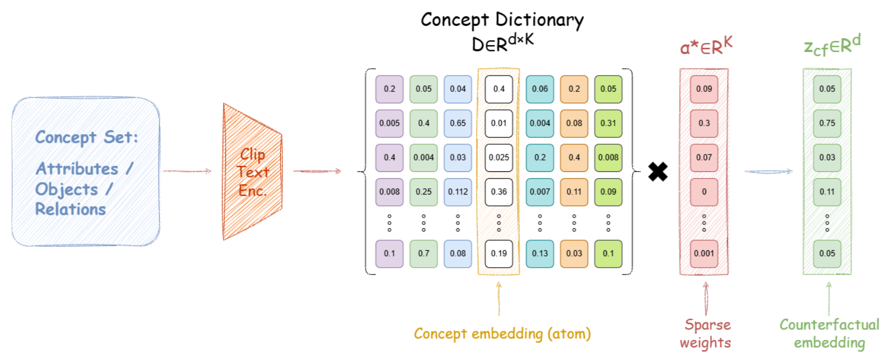

LACE Latent Alignment via Counterfactual Embeddings
a red suitcase next to a black backpack
a black suitcase next to a red backpack
Same objects, same colors, different scene. CLIP-style models often score these two captions almost the same, because their training never forces them to bind each attribute to the right object.
The common fix adds hard negatives on the text side only: swapped, negated, or perturbed captions. The text encoder learns the fine distinctions, but the image encoder never sees a matching near-miss. The shared embedding space becomes lopsided. A few points turn into hubs that crowd out correct matches, neighbors stop agreeing in both directions, and small edits cause brittle failures, even when retrieval scores look healthy.
Hard negatives for both modalities, made in embedding space
LACE edits embeddings instead of pixels. It needs no diffusion model, no image editor, and no retrieval mining, so image-side counterfactuals become as cheap as text-side ones.

Find the concepts in play
Sparse coding writes each embedding as a few active atoms, such as sheep, grass, white, on. Only atoms that are both strongly used and semantically aligned are allowed to be edited.
Change one thing
Attenuate, swap, or transplant a single concept with another of the same type: sheep → zebra, red → blue. The rest of the scene stays as it was.
Train both sides
Edited captions become negatives for image→text retrieval, and edited images become negatives for text→image retrieval. At test time all of this is gone: it is a plain dual encoder.
Three ways to make a near-miss
The bars show the active atoms of an image embedding for a photo of sheep in a field. Pick an edit to see how LACE changes the sparse code before rebuilding the embedding. Values are illustrative.
Edited embeddings retrieve the new concept
We transplant a concept inside a real COCO image embedding and look up its nearest real images. Before the edit, neighbors show the source concept. After it, they show the target, and the surrounding context (grass, plates, tables) stays. A random edit of the same size never retrieves the target.

What the counterfactuals add
Every comparison below holds everything fixed (backbone, data, LoRA setup, optimizer, schedule) and changes only whether LACE's counterfactuals are used.
Multi-object binding
Better at telling scenes apart when the same objects and attributes are bound differently.
Fine visual detail
Image-side negatives sharpen the vision encoder on color, viewpoint, and state.
Fewer brittle failures
About three times fewer cases where an edited caption still wins over the true one. Attribute swaps drop from 4.65% to 1.60%.
Beyond CLIP's loss
The same generator works with SigLIP's pairwise sigmoid objective, improving every benchmark we report.
The shared space also gets healthier: mutual reciprocity rises from 46.57% to 51.41% and hubness falls. The paper has full benchmark results, comparisons with prior compositional methods, and ablations.
BibTeX
@inproceedings{udai2026lace,
title = {{LACE}: Latent Alignment via Counterfactual Embeddings},
author = {Udai, Harsh and Mopuri, Konda Reddy},
booktitle = {Advances in Neural Information Processing Systems},
year = {2026}
}